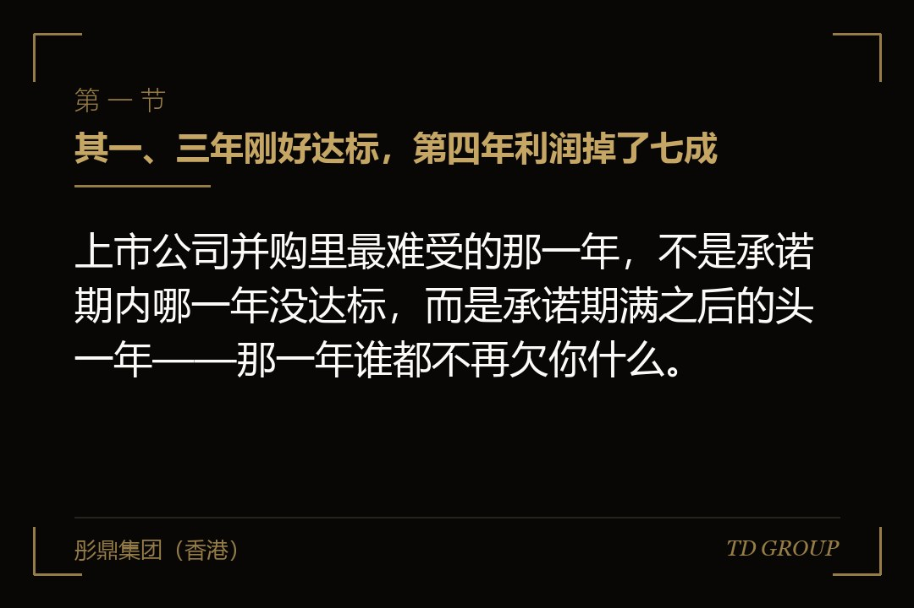
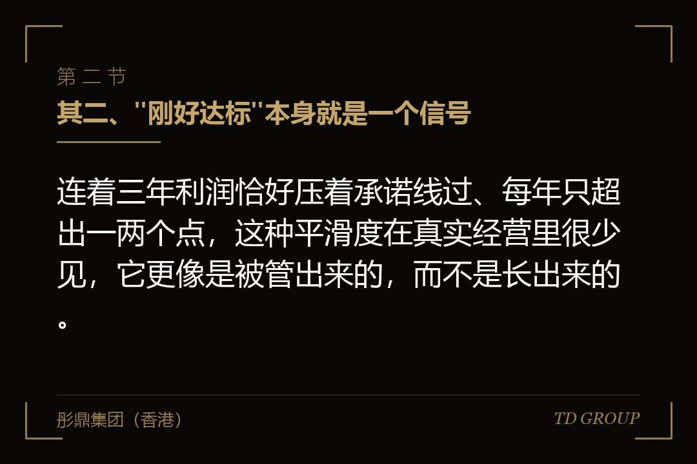
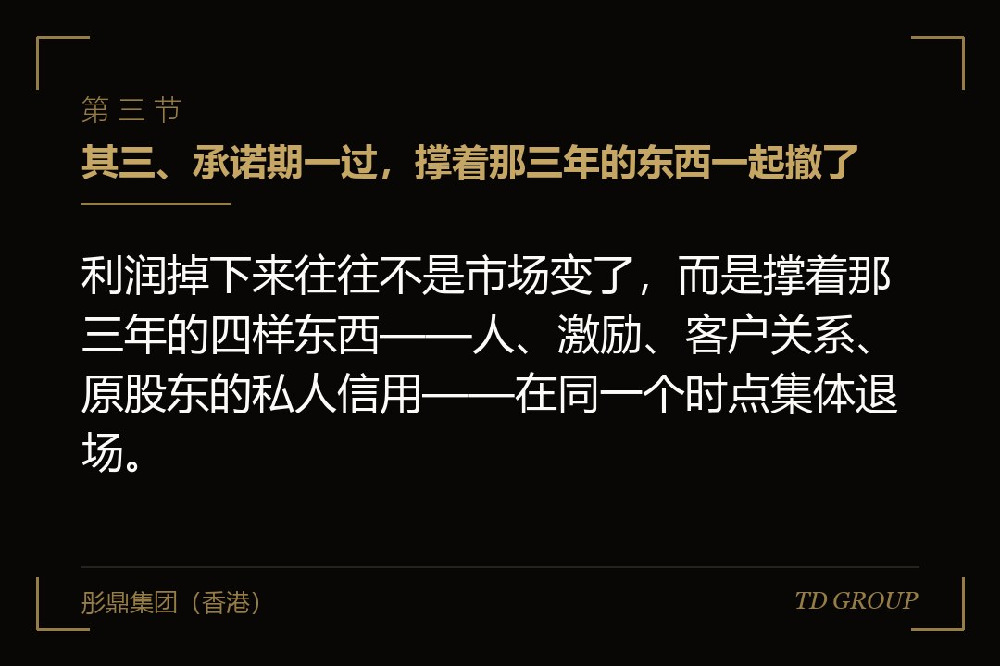

其一、三年刚好达标，第四年利润掉了七成

结论先行：上市公司并购里最难受的那一年，不是承诺期内哪一年没达标，而是承诺期满之后的头一年——那一年谁都不再欠你什么。
假设有家上市公司三年前买下一家做工业阀门的企业，交易作价九个亿，其中七个多亿计入商誉。卖方三位原股东签了三年业绩承诺，扣除非经常性损益后的净利润分别不低于七千万、八千五百万、一个亿。
三年的答卷是七千零四十万、八千六百二十万、一亿零两百万。每一年都达标，每一年都只多出一两个点。董事会每年看到的那份专项审核报告，结论栏写的都是同一句：已完成承诺业绩。
承诺期结束后的第四年，这家标的的扣非净利润是两千八百万。上市公司当年对这项资产组计提商誉减值五个多亿，合并报表由盈转亏，审计报告里为它单独写了一段关键审计事项。
董事会那时候问的问题是：为什么三年都好好的，第四年会这样。这个问题问晚了三年——它该在签约那天问，而且答案本来就写在那三份刚好压线的数字里。
顺带把一件常被混为一谈的事说清楚。本文讲的是并购场景下上市公司与标的原股东之间的业绩承诺，不是融资轮里创始人跟投资人签的对赌。两者的对手方、补偿方向和执行环境都不一样，后者不在本文范围内。
其二、"刚好达标"本身就是一个信号

结论先行：连着三年利润恰好压着承诺线过、每年只超出一两个点，这种平滑度在真实经营里很少见，它更像是被管出来的，而不是长出来的。
头一类做法是压当期费用。市场投放、设备大修、人员招聘、研发投入、渠道返利，凡是当年花钱、效果要到往后才看得见的开支，都可以往后挪一年。挪一年不影响业务，只影响报表。
第二类是收入确认时点。发货日、验收单签署日、完工百分比的估计、经销商压货的返利安排，这些环节里都有判断空间。往前挪半个月，跨的就是一个会计年度。
第三类是关联方走量。原股东控制的其他公司在承诺期内成为标的的客户或者供应商，采购价、结算方式、账期都按对承诺有利的方向定。承诺期一结束，这条业务线往往就淡出了。
第四类是研发支出资本化。把本该在当期费用化的部分转入开发支出，利润当年不受影响，代价是往后几年多出一笔摊销。准则给了判断空间，判断权在标的的财务负责人手上。
第五类是把大额支出整体挪到承诺期之后：厂房改造、诉讼和解、员工遣散、老旧产线报废。这几样一件都不小，凑在第四年一起发生，那一年的报表就很难看。
这些做法里有一部分踩了准则的线，有一部分只是估计与判断上的选择，区分它们要翻底稿。买方看不出来是常态，因为承诺期内标的的财务负责人通常还是原班人马——这一条比上面五类加起来都关键。
其三、承诺期一过，撑着那三年的东西一起撤了

结论先行：利润掉下来往往不是市场变了，而是撑着那三年的四样东西——人、激励、客户关系、原股东的私人信用——在同一个时点集体退场。
原股东先走。三年服务期一到，锁定的股份也陆续解禁，走人不构成违约。他在的时候标的是他的事业，他走之后标的是上市公司的一个事业部，这两件事在员工眼里完全不同。
激励跟着断。承诺期内核心团队分担的是补偿风险，人人都盯着那个数字；期满之后没有人再对这个数字负责，原来的超额分成、项目跟投、年终包，多半也随着原股东一起结束了。
客户关系最难交接。一顿饭一个电话就能定的生意，换成上市公司的招投标流程、统一账期和合规审查之后，客户不一定还在。这类关系长在人身上，尽调时看到的是合同，看不到的是那个人。
供应链账期是最容易被忽略的一样。很多标的的供应商账期，靠的是原股东个人担保或者多年私交撑着。他一撤，供应商改成现款现货，标的的经营性现金流当场紧一截，采购成本也跟着往上走。
再假设一家做环境监测设备的标的。承诺期内七成收入来自三家地方平台客户，合同都是原董事长本人谈的。第四年这三家的采购全部转为公开招标，标的的报价体系撑不住，收入当年掉了一半——而这三家客户的名字，在尽调报告的客户集中度那一节里写得清清楚楚。
其四、商誉是怎么来的，为什么它只会往下走
结论先行：商誉是收购作价超出标的可辨认净资产公允价值的那一部分，它计入报表之后不再逐年摊销，只做减值测试，而减值一经计提不得转回。
先说它从哪儿来。买一家企业买的不是一堆机器和存货，是它以后能挣的钱。作价九个亿，评估出来的可辨认净资产公允价值一个多亿，差出来的七个多亿就是商誉——它是一笔预期，被记成了一项资产。
打个比方。商誉像买房时为学区多付的那一笔。房子还是那套房子，多付的钱买的是一个预期。预期变了，那笔钱不会退给你，只会在账上一次性显出来。
减值测试的机制是这样：商誉要分摊到能够从这笔并购中受益的资产组或者资产组组合，每年年末做一次测试，把资产组的账面价值跟可收回金额比。可收回金额取公允价值减去处置费用后的净额、与预计未来现金流量现值两者中较高的那个。
承诺期一过利润掉七成，预计未来现金流量的预测基础就换了。折现率、增长率、稳定期利润这几个参数一动，可收回金额跟着往下走，减值当年一次性显形——它不是慢慢渗出来的，是某一年年末突然出现的一个数。
不可转回是关键。第二年标的经营回暖了，这笔减值也不许冲回。这跟存货跌价准备不一样，也正因为如此，会计师和监管对减值时点、参数和金额的关注度会明显高一档。
具体的准则条文、资产组划分口径与测试方法，以会计准则原文和年度审计的具体要求为准。本文只讲机制，不复述条款。
其五、报表之外：关键审计事项、问询函与内控缺陷
结论先行：商誉减值真正的代价不止当年那笔损失，还有它引出的一串东西——关键审计事项、监管问询、内控缺陷，以及连续亏损之后的持续上市标准。
会计师那一关先来。商誉减值涉及大量估计和判断，通常会被列为关键审计事项，在审计报告里单独写一段，说明它为什么重要、审计上做了哪些程序。这段话是公开的，所有人都读得到。
交易所的问询函随后。常见的问题就那几个：为什么承诺期内年年达标、期满头一年就大幅下滑；当初的评估假设是怎么定的、现在还成不成立；本次减值用的参数跟上年比变了哪些、为什么变。这些都要董事会和会计师书面回答并公开披露。
内控这一关更麻烦。如果减值的直接成因是并购之后没有把标的纳入统一的财务与内控体系——财务负责人没换、资金没归集、大额开支没有报批——年度内部控制评价里就可能要写成缺陷，甚至是重大缺陷。
董监高的责任也会被翻出来。当初在交易文件上签字、在董事会决议里发表过意见的董事，事后要说明自己当时的判断依据和勤勉尽责情况，独立董事尤其绕不开这一问。
连续亏损还牵着持续上市标准这条线。各交易所对连续亏损、净资产为负、财务会计报告被出具非标意见等情形都有明确规定，触及了就是资格问题，跟经营好坏是两码事。
假设有家上市公司连着两年因为两笔并购计提大额商誉减值，第二年收到问询函，同期被会计师在内控审计报告里指出一项重大缺陷。此后它每做一笔重组，交易所的问询和会计师的程序都会细一档——代价是长期的，不止那一年。
其六、补偿条款为什么常常拿不到钱
结论先行：补偿条款在文本上几乎总是成立的，问题全出在执行——触发时点、补偿上限、股份是否还在原股东名下，以及义务人到那时还有没有偿付能力。
最容易被忽略的是时点错位。补偿义务只覆盖承诺期内那三年，而利润是在第四年掉的。三年年年达标，等于补偿条款一次都没有被触发；报表上的窟窿是实的，可主张的权利是零。这一条比后面几条加起来都致命。
补偿上限是第二道。多数交易把补偿总额设成不超过对价总额，听起来公道，实际含义是：标的的价值就算归零，你也只拿得回当初付出去的钱，中间三年的资金占用、整合投入和商誉减值全部自己承担。
补偿形式是第三道。股份补偿看起来好执行，因为股票在对方名下；但它要走回购注销或者定向划转，涉及股东大会、债权人通知与监管环节，周期不短。现金补偿执行直接，前提是对方账上真有钱。
股份还在不在是第四道。三年下来分批解禁，原股东可能已经把大部分股份质押出去或者陆续处置了。等到要执行的时候，账户里剩下的那点不够抵补偿金额，质押在先的债权人还排在前面。
诉讼周期是第五道。真打起来，一审二审加执行，两三年是常态，期间这笔应收账款还要按预期信用损失计提，等于损失先认一遍。多个补偿义务人之间如果没有约定连带责任，还得一个一个追。
再假设一家上市公司，标的三年补偿义务一次都没触发，第四年利润腰斩。翻遍交易文件，能主张的只有一条写得很宽泛的陈述与保证条款，举证难度大、胜负不确定，最后选择不起诉，把这笔账留在报表里自己消化。
其七、买之前该谈定的四件事
结论先行：管用的安排全在签约之前——整合方案先于对价谈定、关键人与关键客户单独锁住、尾款压到承诺期之后、补偿设计成能真正执行的形态。
整合方案要先于对价。谈价之前先问一句：承诺期结束那天，这家企业靠什么继续挣钱。如果答案是"靠原老板还在"，那这笔买的是一个人不是一家企业，作价逻辑要重写，而不是靠加一条业绩承诺把这个问题往后推三年。
锁人要越过原股东那一层。核心团队单独签服务期与竞业限制，期限盖过承诺期，并配上留任激励和递延奖金。只锁三位原股东是不够的，真正做事的常常是他们下面那几个人，而那几个人一份文件都没签。
锁客户要落成书面。主要客户合同的续签安排、控制权变更条款的豁免、转入上市公司采购与结算体系之后的过渡方式，都要在交割前拿到对方书面确认。尽调看到的是存量合同，要的是它跨过交割日之后还有效。
尾款要压到承诺期之后。把一部分对价分期支付，条件挂在承诺期结束之后一到两年的经营指标上，而不是只挂在承诺期内。这一条改变的不是金额，是激励方向——原股东会开始在意第四年。
补偿要能执行。可用的抓手有几个：股份锁定至补偿义务了结、留一笔现金进共管账户、多个义务人之间明确连带责任、把股份质押给上市公司作担保。对价形式也影响这件事，以股份支付且尚在锁定期的相对好办，具体的对价结构设计不在本文展开。
承诺期内的监督权同样要写死：财务负责人由上市公司委派、资金纳入集中管理、超过一定金额的开支报批、会计政策与确认口径统一、关联交易单独列示。看不见就管不住，而"刚好达标"恰恰是在看不见的地方长出来的。
我们跟华尔街俱乐部有合作，这类并购的案子见得多一些，真正在承诺期满那一年出事的，交易文件在签约那天其实就已经写好了结局。
其八、卖方老板视角：什么样的承诺不该签
结论先行：卖方签下业绩承诺，本质上是拿个人财产为三年后的经营结果作担保，而那三年里拍板的人已经不是你。
承诺是个人的，经营却是共同的。交割之后决策权在上市公司，预算怎么批、人员怎么留、投放怎么花、要不要合并采购，都按新流程走；没达标要掏钱的却仍然是你一个人。这个不对称是整件事的起点。
该谈的头一条，是把承诺指标跟你还控制得住的东西对齐。买方为了整合而压缩费用、调整客户结构、更换供应商，这些动作会实打实影响利润，协议里就该写明相应的指标调整机制，而不是事后各说各话。
该谈的第二条，是补偿的上限与顺序。先股份后现金、总额不超过你已经实际收到的对价、明确不承担超出个人所得的部分。这三句话写不写进去，差别可能是几千万。
该谈的第三条，是承诺期内的经营自主权。哪些事项需要你同意、哪些预算不得低于约定水平、人员调整要不要跟你商量。没有这一条，业绩承诺就成了一张空头担保——责任在你，方向盘在别人手上。
该拒绝的也有几样：承诺期一直跨到你已经确定要离开之后；指标口径由买方单方面认定；连带责任把跟这笔交易无关的家人拉进来；补偿总额不设上限。这四样里任何一样谈不下来，都值得重新想想这笔交易该不该做。
还有一句对卖方不太好听的。连着三年"刚好达标"对你同样不是好事：那意味着这三年一直在用往后的钱填当年的坑，第四年那笔账仍然要有人认，而那时你未必已经全身而退——股份可能还在锁定，声誉一定还在。
最后留一个问题。开头那家工业阀门企业，三年承诺一次都没触发补偿，第四年利润掉了七成——换你是那家上市公司的董秘，你会先去翻交易文件，还是先去看当初那份整合方案是怎么写的？